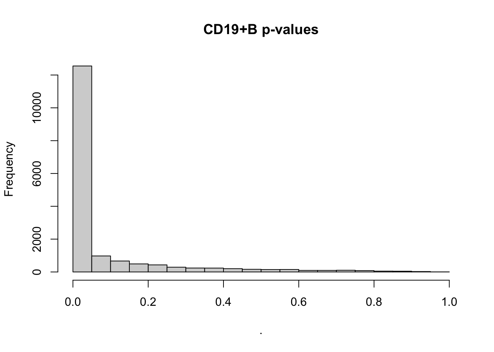

Last updated: 2022-03-29
Checks: 7 0
Knit directory: logistic-susie-gsea/
This reproducible R Markdown analysis was created with workflowr (version 1.7.0). The Checks tab describes the reproducibility checks that were applied when the results were created. The Past versions tab lists the development history.
Great! Since the R Markdown file has been committed to the Git repository, you know the exact version of the code that produced these results.
Great job! The global environment was empty. Objects defined in the global environment can affect the analysis in your R Markdown file in unknown ways. For reproduciblity it’s best to always run the code in an empty environment.
The command set.seed(20220105) was run prior to running the code in the R Markdown file. Setting a seed ensures that any results that rely on randomness, e.g. subsampling or permutations, are reproducible.
Great job! Recording the operating system, R version, and package versions is critical for reproducibility.
Nice! There were no cached chunks for this analysis, so you can be confident that you successfully produced the results during this run.
Great job! Using relative paths to the files within your workflowr project makes it easier to run your code on other machines.
Great! You are using Git for version control. Tracking code development and connecting the code version to the results is critical for reproducibility.
The results in this page were generated with repository version fc1f3c1. See the Past versions tab to see a history of the changes made to the R Markdown and HTML files.
Note that you need to be careful to ensure that all relevant files for the analysis have been committed to Git prior to generating the results (you can use wflow_publish or wflow_git_commit). workflowr only checks the R Markdown file, but you know if there are other scripts or data files that it depends on. Below is the status of the Git repository when the results were generated:
Ignored files:
Ignored: .DS_Store
Ignored: .RData
Ignored: .Rhistory
Ignored: .Rproj.user/
Ignored: library/
Ignored: renv/library/
Ignored: renv/staging/
Ignored: staging/
Untracked files:
Untracked: _targets.R
Untracked: _targets.html
Untracked: _targets.md
Untracked: _targets/
Untracked: _targets_r/
Untracked: analysis/fetal_reference_cellid_gsea.Rmd
Untracked: analysis/fixed_intercept.Rmd
Untracked: analysis/iDEA_examples.Rmd
Untracked: analysis/latent_gene_list.Rmd
Untracked: analysis/latent_logistic_susie.Rmd
Untracked: analysis/libra_setup.Rmd
Untracked: analysis/linear_method_failure_modes.Rmd
Untracked: analysis/linear_regression_failure_regime.Rmd
Untracked: analysis/logistic_susie_veb_boost_vs_vb.Rmd
Untracked: analysis/references.bib
Untracked: analysis/simulations.Rmd
Untracked: analysis/test.Rmd
Untracked: analysis/wenhe_baboon_example.Rmd
Untracked: build_site.R
Untracked: cache/
Untracked: code/latent_logistic_susie.R
Untracked: code/marginal_sumstat_gsea_collapsed.R
Untracked: data/adipose_2yr_topsnp.txt
Untracked: data/fetal_reference_cellid_gene_sets.RData
Untracked: data/pbmc-purified/
Untracked: docs.zip
Untracked: index.md
Untracked: latent_logistic_susie_cache/
Untracked: simulation_targets/
Untracked: single_cell_pbmc_cache/
Untracked: summary_stat_gsea_exploration_cache/
Unstaged changes:
Modified: _simulation_targets.R
Modified: _targets.Rmd
Modified: analysis/gseabenchmark_tcga.Rmd
Modified: code/fit_baselines.R
Modified: code/fit_logistic_susie.R
Modified: code/fit_mr_ash.R
Modified: code/fit_susie.R
Modified: code/load_gene_sets.R
Modified: code/marginal_sumstat_gsea.R
Modified: code/simulate_gene_lists.R
Modified: code/utils.R
Modified: target_components/factories.R
Modified: target_components/methods.R
Note that any generated files, e.g. HTML, png, CSS, etc., are not included in this status report because it is ok for generated content to have uncommitted changes.
These are the previous versions of the repository in which changes were made to the R Markdown (analysis/single_cell_pbmc.Rmd) and HTML (docs/single_cell_pbmc.html) files. If you’ve configured a remote Git repository (see ?wflow_git_remote), click on the hyperlinks in the table below to view the files as they were in that past version.
| File | Version | Author | Date | Message |
|---|---|---|---|---|
| Rmd | fc1f3c1 | karltayeb | 2022-03-29 | wflow_publish(“analysis/single_cell_pbmc.Rmd”) |
| html | 8646723 | karltayeb | 2022-03-29 | Build site. |
| Rmd | 6143c44 | karltayeb | 2022-03-29 | wflow_publish(“analysis/single_cell_pbmc.Rmd”) |
| html | 56f8130 | karltayeb | 2022-03-29 | Build site. |
| html | a2bdb56 | karltayeb | 2022-03-29 | Build site. |
| Rmd | 122deec | karltayeb | 2022-03-29 | wflow_publish(pages) |
Our goals here are to run Logistic SuSiE on differential expression results from TCGA. We want to assess:
library(GSEABenchmarkeR)
library(EnrichmentBrowser)
library(tidyverse)
library(susieR)
library(DT)
source('code/load_gene_sets.R')
source('code/utils.R')
source('code/logistic_susie_vb.R')
source('code/logistic_susie_veb_boost.R')
source('code/latent_logistic_susie.R')loadGeneSetX uniformly formats gene sets and generates the \(X\) matrix We can source any gene set from WebGestaltR::listGeneSet()
gs_list <- WebGestaltR::listGeneSet()
gobp <- loadGeneSetX('geneontology_Biological_Process', min.size=50) # just huge number of gene sets
gobp_nr <- loadGeneSetX('geneontology_Biological_Process_noRedundant', min.size=1)
gomf <- loadGeneSetX('geneontology_Molecular_Function', min.size=1)
kegg <- loadGeneSetX('pathway_KEGG', min.size=1)
reactome <- loadGeneSetX('pathway_Reactome', min.size=1)
wikipathway_cancer <- loadGeneSetX('pathway_Wikipathway_cancer', min.size=1)
wikipathway <- loadGeneSetX('pathway_Wikipathway', min.size=1)
genesets <- list(
gobp=gobp,
gobp_nr=gobp_nr,
gomf=gomf,
kegg=kegg,
reactome=reactome,
wikipathway_cancer=wikipathway_cancer,
wikipathway=wikipathway
)load('data/pbmc-purified/deseq2-pbmc-purified.RData')
convert_labels <- function(y, from='SYMBOL', to='ENTREZID'){
hs <- org.Hs.eg.db::org.Hs.eg.db
gene_symbols <- names(y)
symbol2entrez <- AnnotationDbi::select(hs, keys=gene_symbols, columns=c(to, from), keytype = from)
symbol2entrez <- symbol2entrez[!duplicated(symbol2entrez[[from]]),]
symbol2entrez <- symbol2entrez[!is.na(symbol2entrez[[to]]),]
symbol2entrez <- symbol2entrez[!is.na(symbol2entrez[[from]]),]
rownames(symbol2entrez) <- symbol2entrez[[from]]
ysub <- y[names(y) %in% symbol2entrez[[from]]]
names(ysub) <- symbol2entrez[names(ysub),][[to]]
return(ysub)
}
par(mfrow=c(1,1))
deseq$`CD19+ B` %>% .$padj %>% hist(main='CD19+B p-values')Loading required package: DESeq2
| Version | Author | Date |
|---|---|---|
| a2bdb56 | karltayeb | 2022-03-29 |
logistic_susie_driver = function(db, celltype, thresh){
gs <- genesets[[db]]
data <- deseq[[celltype]]
# set up binary y
y <- data %>%
as.data.frame %>%
rownames_to_column('gene') %>%
dplyr::select(gene, padj) %>%
filter(!is.na(padj)) %>%
mutate(y = as.integer(padj < thresh)) %>%
select(gene, y) %>%
tibble2namedlist %>%
convert_labels('ENSEMBL')
u <- process_input(gs$X, y) # subset to common genes
vb.fit <- logistic.susie( # fit model
u$X, u$y, L=10, init.intercept = 0, verbose=1, maxit=100)
# summarise results
set.summary <- vb.fit$pip %>%
as_tibble(rownames='geneSet') %>%
rename(pip=value) %>%
mutate(
top_component = apply(vb.fit$alpha, 2, which.max),
active_set = top_component %in% vb.fit$sets$cs_index,
top_component = paste0('L', top_component),
cs = purrr::map(top_component, ~tryCatch(
colnames(gs$X)[get(.x, vb.fit$sets$cs)], error = function(e) list())),
in_cs = geneSet %in% cs,
beta = colSums(vb.fit$mu * vb.fit$alpha),
geneListSize = sum(u$y),
geneSetSize = colSums(u$X),
overlap = (u$y %*% u$X)[1,],
nGenes = length(u$y),
propSetInList = overlap / geneSetSize,
oddsRatio = (overlap / (geneListSize - overlap)) / (
(geneSetSize - overlap) / (nGenes - geneSetSize + overlap)),
pValueHypergeometric = phyper(
overlap-1, geneListSize, nGenes, geneSetSize, lower.tail= FALSE),
db = db,
celltype = celltype,
thresh = thresh
) %>% left_join(gs$geneSet$geneSetDes)
return(list(fit = vb.fit, set.summary=set.summary))
}For each celltype, we fit logistic SuSiE using multiple gene set sources at various threshold of padj.
celltypes <- names(deseq)
pthresh <- c(0.1, 0.01, 0.001, 0.0001, 0.00001, 0.000001)
db_name <- names(genesets)
crossed <- cross3(db_name, celltypes, pthresh)
pbmc_res <- xfun::cache_rds({
res <- purrr::map(crossed, purrr::lift_dl(logistic_susie_driver))
for (i in 1:length(res)){ # save some space
res[[i]]$fit$dat <- NULL
}
res
}, file = 'logistic_susie_pbmc_genesets_pthresh.rds'
)
pbmc_res_set_summary <- dplyr::bind_rows(purrr::map(pbmc_res, ~ pluck(.x, 'set.summary')))Just a few functions to help streamline looking at output
pval_focussed_table = function(thresh=1e-3, filter_db=NULL, filter_celltype=NULL, top.n=50){
pbmc_res_set_summary %>%
filter(
case_when(
is.null(filter_db) ~ TRUE,
!is.null(filter_db) ~ db %in% filter_db
) &
thresh == thresh &
case_when(
is.null(filter_celltype) ~ TRUE,
!is.null(filter_celltype) ~ celltype %in% filter_celltype
)
) %>%
dplyr::arrange(celltype, db, pValueHypergeometric) %>%
group_by(celltype, db) %>% slice(1:top.n) %>%
select(celltype, db, geneSet, description, pip, top_component, oddsRatio, propSetInList, pValueHypergeometric) %>%
mutate_at(vars(celltype, db), factor) %>%
datatable(filter = 'top')
}
set_focussed_table = function(thresh=1e-3, filter_db=NULL, filter_celltype=NULL){
pbmc_res_set_summary %>%
filter(
case_when(
is.null(filter_db) ~ TRUE,
!is.null(filter_db) ~ db %in% filter_db
) &
thresh == 1e-3 &
in_cs & active_set &
case_when(
is.null(filter_celltype) ~ TRUE,
!is.null(filter_celltype) ~ celltype %in% filter_celltype
)
) %>%
dplyr::arrange(celltype, db, desc(pip)) %>%
select(celltype, db, geneSet, description, pip, top_component, oddsRatio, propSetInList, pValueHypergeometric) %>%
mutate_at(vars(celltype, geneSet, db), factor) %>%
datatable(filter = 'top')
}Our goal is to assess 1. The quality of the gene set enrichments we get from each celltype - do reported gene set enrichments seem celltype specific/celltype relevant? - how much “interesting” marginal enrichment do we fail to capture in the multivariate model - how sensitive are we to the choice of pvalue threshold
Lets take a look at what enrichment we’re getting across cell-types.
pbmc_res_set_summary %>%
filter(active_set, in_cs, thresh == 1e-4, celltype == 'CD19+ B') %>%
select(
geneSet, description, top_component, pip,
beta, geneListSize, geneSetSize, propSetInList, pValueHypergeometric) %>%
knitr::kable()| geneSet | description | top_component | pip | beta | geneListSize | geneSetSize | propSetInList | pValueHypergeometric |
|---|---|---|---|---|---|---|---|---|
| GO:0001775 | cell activation | L5 | 0.9780542 | 0.4672903 | 6911 | 1128 | 0.7517730 | 0 |
| GO:0002376 | immune system process | L1 | 0.9999575 | 0.5078753 | 6911 | 2228 | 0.7064632 | 0 |
| GO:0045047 | protein targeting to ER | L2 | 0.9620521 | 2.4624775 | 6911 | 105 | 0.9428571 | 0 |
| GO:0002764 | immune response-regulating signaling pathway | L5 | 0.9961853 | 0.5645340 | 6327 | 411 | 0.7445255 | 0 |
| GO:0009123 | nucleoside monophosphate metabolic process | L4 | 0.9844976 | 0.7415436 | 6327 | 286 | 0.7517483 | 0 |
| GO:0070972 | protein localization to endoplasmic reticulum | L2 | 0.9999580 | 1.6294991 | 6327 | 132 | 0.8712121 | 0 |
| GO:0003723 | RNA binding | L1 | 0.9997440 | 0.3528854 | 6975 | 1483 | 0.6581254 | 0 |
| GO:0000981 | DNA-binding transcription factor activity, RNA polymerase II-specific | L2 | 0.9950038 | -0.6568235 | 6975 | 1161 | 0.4771748 | 0 |
| GO:0003735 | structural constituent of ribosome | L6 | 0.9953441 | 0.9638753 | 6975 | 152 | 0.8289474 | 0 |
| hsa00190 | Oxidative phosphorylation | L1 | 0.9979902 | 1.4574888 | 3273 | 120 | 0.8750000 | 0 |
| hsa03010 | Ribosome | L3 | 1.0000000 | 1.4064281 | 3273 | 129 | 0.8682171 | 0 |
| hsa04640 | Hematopoietic cell lineage | L2 | 0.9997951 | 1.4990711 | 3273 | 80 | 0.8875000 | 0 |
| R-HSA-168256 | Immune System | L1 | 1.0000000 | 0.7492562 | 4620 | 1627 | 0.6969883 | 0 |
| R-HSA-983168 | Antigen processing: Ubiquitination & Proteasome degradation | L5 | 0.9970497 | -1.0658222 | 4620 | 280 | 0.5392857 | 0 |
| WP619 | Type II interferon signaling (IFNG) | L1 | 0.9998636 | 2.4876068 | 966 | 30 | 0.9666667 | 0 |
| WP111 | Electron Transport Chain (OXPHOS system in mitochondria) | L2 | 0.9999189 | 1.6369406 | 3220 | 101 | 0.9009901 | 0 |
| WP477 | Cytoplasmic Ribosomal Proteins | L1 | 1.0000000 | 2.4011250 | 3220 | 85 | 0.9529412 | 0 |
pbmc_res_set_summary %>%
filter(active_set, in_cs, thresh == 1e-4, celltype == 'CD56+ NK') %>%
select(
geneSet, description, top_component, pip,
beta, geneListSize, geneSetSize, propSetInList, pValueHypergeometric) %>%
knitr::kable()| geneSet | description | top_component | pip | beta | geneListSize | geneSetSize | propSetInList | pValueHypergeometric |
|---|---|---|---|---|---|---|---|---|
| GO:0002376 | immune system process | L1 | 0.9999984 | 0.6534004 | 7231 | 2228 | 0.7221724 | 0 |
| GO:0006119 | oxidative phosphorylation | L4 | 0.9815754 | 1.3155955 | 7231 | 118 | 0.8474576 | 0 |
| GO:0006413 | translational initiation | L2 | 0.9954877 | 1.1585848 | 6598 | 182 | 0.8351648 | 0 |
| GO:0009123 | nucleoside monophosphate metabolic process | L4 | 0.9815927 | 0.6736545 | 6598 | 286 | 0.7622378 | 0 |
| GO:0042110 | T cell activation | L3 | 0.9856601 | 0.5907739 | 6598 | 389 | 0.7763496 | 0 |
| GO:0042113 | B cell activation | L5 | 0.9972725 | 0.8422029 | 6598 | 198 | 0.8232323 | 0 |
| GO:0000981 | DNA-binding transcription factor activity, RNA polymerase II-specific | L2 | 0.9967706 | -0.7338417 | 7305 | 1161 | 0.4952627 | 0 |
| GO:0003735 | structural constituent of ribosome | L1 | 1.0000000 | 1.9030114 | 7305 | 152 | 0.9144737 | 0 |
| hsa03010 | Ribosome | L1 | 1.0000000 | 1.7794168 | 3406 | 129 | 0.9147287 | 0 |
| hsa04640 | Hematopoietic cell lineage | L3 | 0.9978541 | 1.3141833 | 3406 | 80 | 0.8750000 | 0 |
| hsa05012 | Parkinson disease | L2 | 0.9999978 | 1.5611100 | 3406 | 126 | 0.8968254 | 0 |
| R-HSA-168256 | Immune System | L1 | 1.0000000 | 0.6885907 | 4855 | 1627 | 0.7209588 | 0 |
| R-HSA-8878171 | Transcriptional regulation by RUNX1 | L5 | 0.9712818 | 0.9657802 | 4855 | 189 | 0.7513228 | 0 |
| R-HSA-163200 | Respiratory electron transport, ATP synthesis by chemiosmotic coupling, and heat production by uncoupling proteins. | L4 | 0.9933245 | 1.3233274 | 4855 | 121 | 0.8429752 | 0 |
| WP111 | Electron Transport Chain (OXPHOS system in mitochondria) | L2 | 0.9908620 | 1.3218233 | 3316 | 101 | 0.8811881 | 0 |
| WP477 | Cytoplasmic Ribosomal Proteins | L1 | 1.0000000 | 2.9682233 | 3316 | 85 | 0.9764706 | 0 |
pbmc_res_set_summary %>%
filter(active_set, in_cs, thresh == 1e-4, celltype == 'T cell') %>%
select(
geneSet, description, top_component, pip,
beta, geneListSize, geneSetSize, propSetInList, pValueHypergeometric) %>%
knitr::kable()| geneSet | description | top_component | pip | beta | geneListSize | geneSetSize | propSetInList | pValueHypergeometric |
|---|---|---|---|---|---|---|---|---|
| GO:0001775 | cell activation | L1 | 0.9982435 | 0.7533519 | 8802 | 1127 | 0.8881988 | 0 |
| GO:0002376 | immune system process | L5 | 0.9984689 | 0.4243072 | 8802 | 2227 | 0.8378985 | 0 |
| GO:0006119 | oxidative phosphorylation | L2 | 0.9988673 | 1.7903483 | 8802 | 118 | 0.9406780 | 0 |
| GO:0042110 | T cell activation | L2 | 0.9999906 | 0.9206753 | 7959 | 389 | 0.8868895 | 0 |
| GO:0070972 | protein localization to endoplasmic reticulum | L3 | 0.9998559 | 1.3305778 | 7959 | 132 | 0.9166667 | 0 |
| GO:0005515 | protein binding | L1 | 1.0000000 | 0.3704248 | 8880 | 9033 | 0.7474815 | 0 |
| hsa05010 | Alzheimer disease | L1 | 0.9999993 | 1.6786291 | 3983 | 154 | 0.9480519 | 0 |
| R-HSA-6798695 | Neutrophil degranulation | L1 | 1.0000000 | 1.3714212 | 5790 | 431 | 0.9164733 | 0 |
pbmc_res_set_summary %>%
filter(active_set, in_cs, thresh == 1e-4, celltype == 'CD14+ Monocyte') %>%
select(
geneSet, description, top_component, pip,
beta, geneListSize, geneSetSize, propSetInList, pValueHypergeometric) %>%
knitr::kable()| geneSet | description | top_component | pip | beta | geneListSize | geneSetSize | propSetInList | pValueHypergeometric |
|---|---|---|---|---|---|---|---|---|
| GO:0016192 | vesicle-mediated transport | L4 | 0.9851434 | 0.3239679 | 6633 | 1605 | 0.6560748 | 0.0000000 |
| GO:0006119 | oxidative phosphorylation | L3 | 0.9990485 | 1.7896878 | 6633 | 118 | 0.8728814 | 0.0000000 |
| GO:0006413 | translational initiation | L2 | 0.9999940 | 1.2066226 | 6073 | 182 | 0.8461538 | 0.0000000 |
| GO:0009123 | nucleoside monophosphate metabolic process | L3 | 0.9883528 | 0.9050661 | 6073 | 286 | 0.7622378 | 0.0000000 |
| GO:0036230 | granulocyte activation | L1 | 0.9759280 | 1.1699222 | 6073 | 450 | 0.8088889 | 0.0000000 |
| GO:0003723 | RNA binding | L1 | 0.9999998 | 0.4163546 | 6697 | 1480 | 0.6655405 | 0.0000000 |
| GO:0000981 | DNA-binding transcription factor activity, RNA polymerase II-specific | L2 | 0.9998275 | -0.6329681 | 6697 | 1160 | 0.4646552 | 0.0000000 |
| GO:0003735 | structural constituent of ribosome | L4 | 1.0000000 | 1.6077468 | 6697 | 152 | 0.8947368 | 0.0000000 |
| hsa03010 | Ribosome | L1 | 1.0000000 | 1.7470056 | 3110 | 129 | 0.8914729 | 0.0000000 |
| hsa05012 | Parkinson disease | L2 | 0.9999021 | 1.6964808 | 3110 | 125 | 0.8880000 | 0.0000000 |
| R-HSA-6798695 | Neutrophil degranulation | L1 | 0.9999954 | 1.2111808 | 4451 | 431 | 0.8051044 | 0.0000000 |
| R-HSA-198933 | Immunoregulatory interactions between a Lymphoid and a non-Lymphoid cell | L6 | 0.9974877 | 1.1921499 | 4451 | 103 | 0.8155340 | 0.0000000 |
| R-HSA-72766 | Translation | L2 | 1.0000000 | 1.6620629 | 4451 | 286 | 0.8251748 | 0.0000000 |
| R-HSA-163200 | Respiratory electron transport, ATP synthesis by chemiosmotic coupling, and heat production by uncoupling proteins. | L3 | 0.9996111 | 1.7113805 | 4451 | 121 | 0.8677686 | 0.0000000 |
| R-HSA-379726 | Mitochondrial tRNA aminoacylation | L7 | 0.9972986 | -2.4026838 | 4451 | 21 | 0.3333333 | 0.6931782 |
| WP111 | Electron Transport Chain (OXPHOS system in mitochondria) | L2 | 0.9998312 | 1.7563572 | 3062 | 100 | 0.9000000 | 0.0000000 |
| WP477 | Cytoplasmic Ribosomal Proteins | L1 | 1.0000000 | 2.5280541 | 3062 | 85 | 0.9529412 | 0.0000000 |
pbmc_res_set_summary %>%
filter(active_set, in_cs, thresh == 1e-4, celltype == 'CD34+') %>%
select(
geneSet, description, top_component, pip,
beta, geneListSize, geneSetSize, propSetInList, pValueHypergeometric) %>%
knitr::kable()| geneSet | description | top_component | pip | beta | geneListSize | geneSetSize | propSetInList | pValueHypergeometric |
|---|---|---|---|---|---|---|---|---|
| GO:0001775 | cell activation | L1 | 0.9870540 | 0.7305079 | 8363 | 1128 | 0.8226950 | 0 |
| GO:0006119 | oxidative phosphorylation | L3 | 0.9989413 | 1.5639047 | 8363 | 118 | 0.9152542 | 0 |
| GO:0006413 | translational initiation | L2 | 0.9996608 | 1.0665346 | 7544 | 182 | 0.8736264 | 0 |
| GO:0005515 | protein binding | L2 | 1.0000000 | 0.3367103 | 8421 | 9031 | 0.7087809 | 0 |
| GO:0003735 | structural constituent of ribosome | L1 | 1.0000000 | 1.7570426 | 8421 | 152 | 0.9276316 | 0 |
| hsa00190 | Oxidative phosphorylation | L1 | 0.9921759 | 1.5131062 | 3772 | 120 | 0.9250000 | 0 |
| hsa03010 | Ribosome | L2 | 1.0000000 | 1.5232912 | 3772 | 129 | 0.9224806 | 0 |
| R-HSA-6798695 | Neutrophil degranulation | L2 | 0.9862716 | 0.7788667 | 5481 | 432 | 0.8356481 | 0 |
| R-HSA-198933 | Immunoregulatory interactions between a Lymphoid and a non-Lymphoid cell | L4 | 0.9999503 | 1.4291485 | 5481 | 103 | 0.9126214 | 0 |
| R-HSA-163200 | Respiratory electron transport, ATP synthesis by chemiosmotic coupling, and heat production by uncoupling proteins. | L3 | 0.9977325 | 1.5694015 | 5481 | 121 | 0.9173554 | 0 |
| R-HSA-72764 | Eukaryotic Translation Termination | L1 | 0.9930562 | 3.4135736 | 5481 | 90 | 0.9888889 | 0 |
| WP111 | Electron Transport Chain (OXPHOS system in mitochondria) | L2 | 0.9999971 | 2.1291975 | 3698 | 101 | 0.9603960 | 0 |
| WP477 | Cytoplasmic Ribosomal Proteins | L1 | 1.0000000 | 3.2474751 | 3698 | 85 | 0.9882353 | 0 |
knitr::knit_exit()